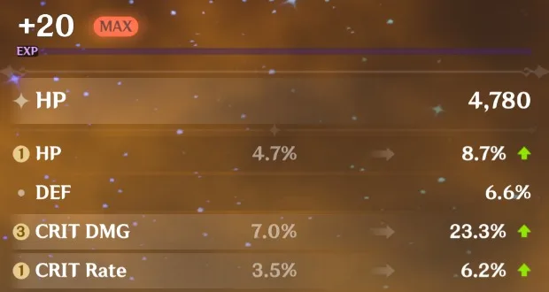
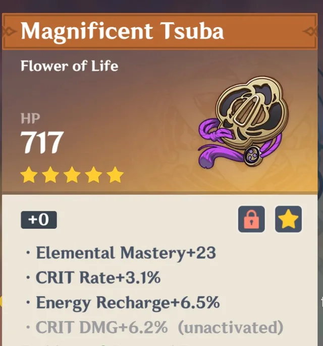
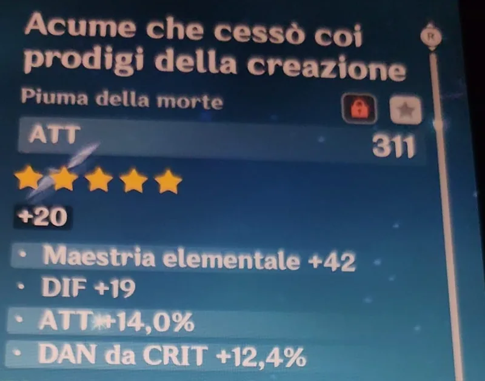
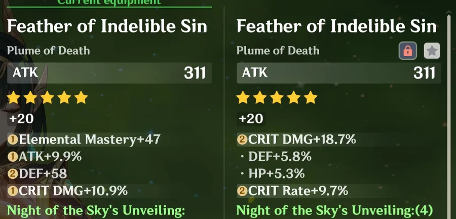
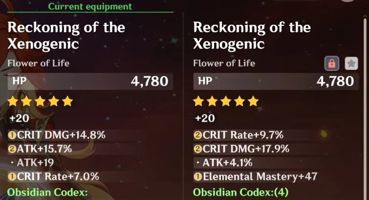
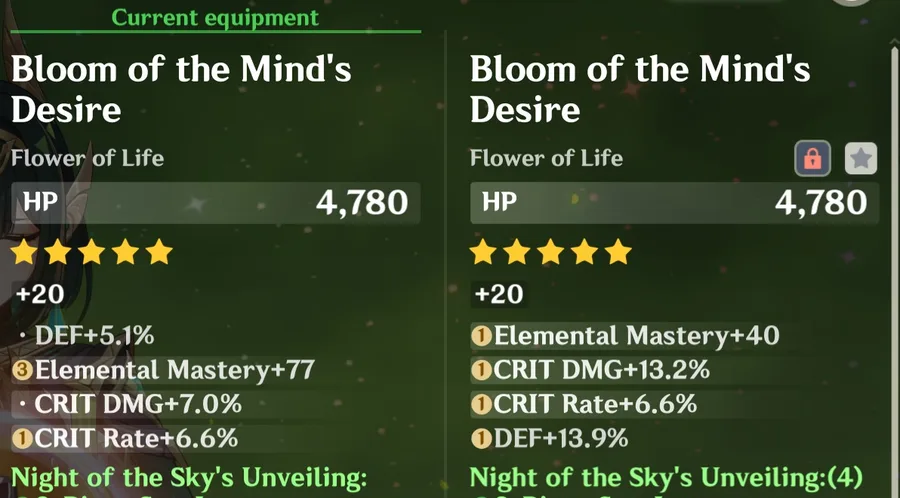
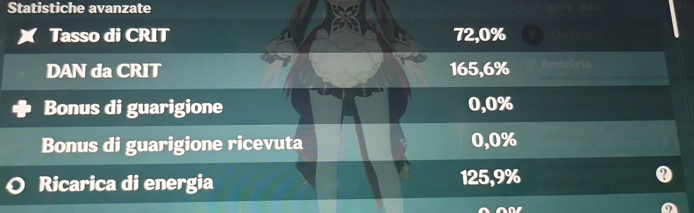

Guida generale · Artifacts
Come buildare i personaggi
Leggere un artefatto, capire quanto vale e decidere se tenerlo. Clicca sugli screenshot per ingrandirli.
1. Leggere un artefatto
Il numero nel cerchio

- In alto la main stat, sotto i 4 substats.
- Il numero nel cerchio dice quante volte quel substat è salito. Nessun cerchio = mai.
- Un 5★ riceve 5 upgrade (a +4, +8, +12, +16, +20): più ne finiscono nelle stat giuste, meglio è.
2. 3 o 4 substats
Il substat grigio

3. Main stats
Flower e Plume sono fisse| Scala su |  Sands Sands |
Goblet | Circlet |
|---|---|---|---|
| ATK | ATK% | DMG elementale | CRIT |
| HP | HP% | DMG elementale | CRIT |
| DEF | DEF% | DMG elementale | CRIT |
| EM + CRIT | EM | EM / DMG el. | CRIT |
| Support | ER / HP% | HP% | HP% / Healing |
Serve tanta Energy Recharge? Sands ER al posto di quella “giusta”, come quella nello screenshot del punto 1.
4. Crit Value (CV)
Quanto crit c’è nei substats

Massimo teorico 54,4. Per tutta la build (5 pezzi): 150 buona, 180 ottima, 210+ end game. Fasce indicative.
5. Roll Value (RV)
Quando il CV ingannaIl CV vede solo i crit. Il Roll Value conta i roll in tutte le stat utili al personaggio (crit + ATK%, HP%, EM…): 100% = un roll pieno.

Cambia: vince su tutti e due.

Dubbio: più CV, ma 2 roll di ATK% in meno. Tieni quella che ti lascia più vicino all’1:2.

Tieni: 3 roll di EM, che per Nefer valgono.
Pezzo singolo: 300% discreto, 450% buono, 600%+ ottimo. Stat utili usate: CRIT + ATK% per Mavuika, CRIT + EM per Nefer.
6. La build
Dalla schermata del personaggio

Set come Marechaussee Hunter o Obsidian Codex danno CRIT Rate solo in combattimento: in schermata il rapporto sembra sbilanciato, ma va bene.
7. Tenere o buttare
Prima di spendere EXP- 1Main stat giusta?Su Sands, Goblet e Circlet: se no, fodder.
- 2Almeno un crit + una stat utile?Conta anche il substat grigio del 3-liner.
- 3Porta a +4, poi a +8Due upgrade in stat inutili? Fermati.
- 4Batte il pezzo equipaggiato?Confronta CV e RV, come al punto 5.
8. Calcolatore
CV di un artefattoScrivi i due substat crit del pezzo (0 se non c’è). Non contare la main stat del Circlet.
Le 12 build del mio ex accountCV e RV di ogni personaggio
Dati della vetrina del mio ex account letti da Enka.network il 16/11/2026, solo substats. Clicca le intestazioni per ordinare.
| Personaggio | Profilo | Set | CRIT Rate / DMG | ER | CV | RV |
|---|---|---|---|---|---|---|
| ATK + CRIT | 4pz Finale of the Deep Galleries | 75,7% / 237,6%1 : 3,1 | 104,5% | 184,2 | 2450%≈ 24,5 roll pieni | |
| ATK + CRIT | 4pz Obsidian Codex | 56,1% / 253,9%1 : 4,5 | 100,0% | 183,4 | 2659%≈ 26,6 roll pieni | |
| ATK + CRIT | 2pz Gladiator’s Finale + 2pz Wanderer’s Troupe | 66,2% / 275,5%1 : 4,2 | 100,0% | 181,2 | 2480%≈ 24,8 roll pieni | |
| EM + CRIT | 4pz Night of the Sky’s Unveiling | 56,6% / 314,2%1 : 5,6 | 105,2% | 162,4 | 2629%≈ 26,3 roll pieni | |
| ATK + CRIT | 4pz Night of the Sky’s Unveiling | 63,3% / 252,5%1 : 4,0 | 114,9% | 152,2 | 2028%≈ 20,3 roll pieni | |
| HP + CRIT | 4pz Marechaussee Hunter | 63,1% / 254,0%1 : 4,0 | 116,8% | 146,1 | 2470%≈ 24,7 roll pieni | |
| ATK + CRIT + ER | 4pz Noblesse Oblige | 55,3% / 193,1%1 : 3,5 | 207,5% | 138,8 | 2815%≈ 28,1 roll pieni | |
| HP + CRIT | 4pz Aubade of Morningstar and Moon | 79,0% / 225,2%1 : 2,9 | 122,0% | 134,4 | 2058%≈ 20,6 roll pieni | |
| HP + CRIT + ER | 4pz Tenacity of the Millelith | 52,2% / 95,9%1 : 1,8 | 280,4% | 101,8 | 2529%≈ 25,3 roll pieni | |
| Support EM | 4pz Silken Moon’s Serenade | 26,0% / 69,4%1 : 2,7 | 232,0% | 61,4 | 1350%≈ 13,5 roll pieni | |
| Support DEF | 4pz Instructor alcuni pezzi a +16 | 18,6% / 65,5%1 : 3,5 | 129,0% | 42,7 | 759%≈ 7,6 roll pieni | |
| Support EM | 4pz Scroll of the Hero of Cinder City | 17,0% / 64,0%1 : 3,8 | 204,3% | 38,0 | 1282%≈ 12,8 roll pieni |
Escoffier ha poco CV ma il Roll Value più alto: i suoi roll sono in ER, che le serve. Citlali, Lauma e Xilonen sono Support: per loro il CV non conta.
Valori dei roll da KeqingMains. Screenshot dal gioco; build della vetrina da Enka.network. Fasce di CV e RV indicative.